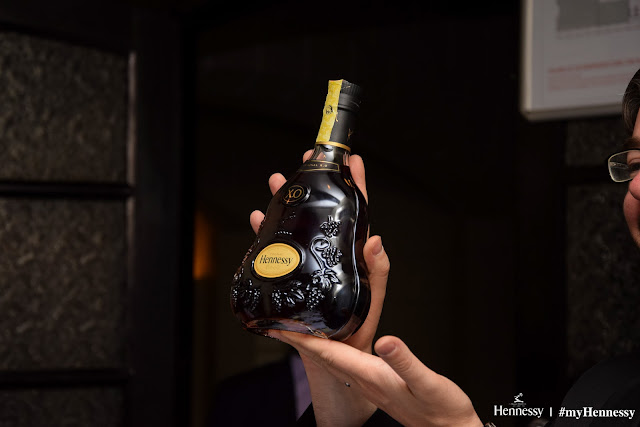
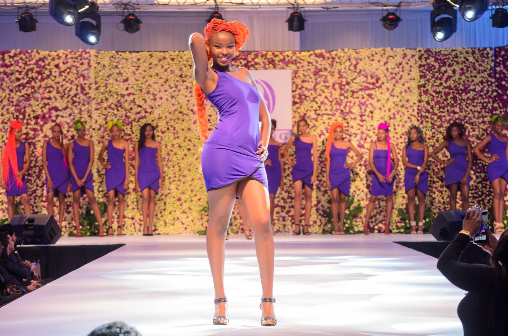
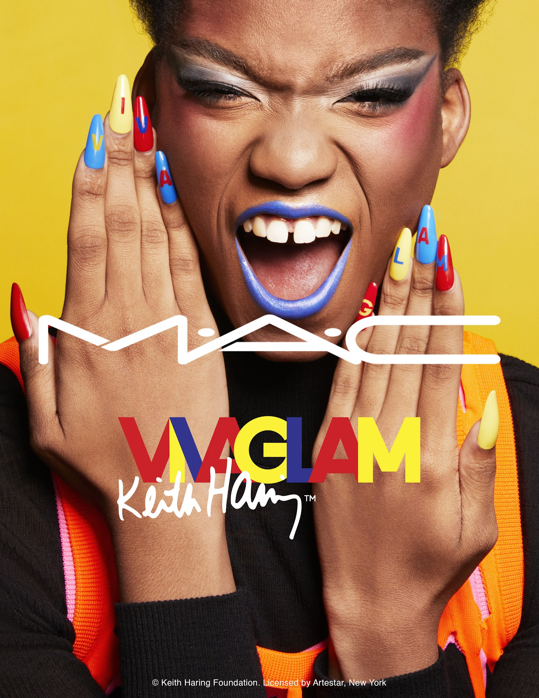

OUR PROJECTS
HENNESSY
The global brand development director of Moet Hennessy, Mr. Laurent Dominguez together with Mr. Alexandre Helaine Moet Hennessy marketing manager, hosted our top lifestyle influencers to an exclusive tasting of the Hennessy XO.
The aim of the event was to introduce the top influencers to the brand Hennessy and also for our client to have a chance to educate the influencers more on how to pair up the cognac with food
Mr. Dominguez used the stages of a 4-course fine dining meal to let the personalities sip and savor the different pearls on the Hennessy crown.They were able learn and taste the great cognacs of Maison Hennessy; the very special (V.S), Very Superior Old Pale (VSOP) and of course the ultimate Extra Old (X.O) accompanied by stories of how each name came to be.
DARLING HAIR KENYA
Re-launch of Darling event with top influencers in the fashion and beauty industry. Darling is one of East Africa's leading hair extensions manufacturer and they relaunched the brand with the introduction of product range as part of its growth strategy in the region.The brand revamped itself with a new brand look ( from colour red to purple), new hairstyles, superior product benefits and richer colours.
MAC COSMETICS
I attended the relaunch of Darling on Wednesday and the event was memorable and amazing. Darling is one of East Africa's leading hair extensions manufacturer and they relaunched the brand with the introduction of product range as part of its growth strategy in the region.The brand revamped itself with a new brand look ( from colour red to purple), new hairstyles, superior product benefits and richer colours.
ACCOR

I attended the relaunch of Darling on Wednesday and the event was memorable and amazing. Darling is one of East Africa's leading hair extensions manufacturer and they relaunched the brand with the introduction of product range as part of its growth strategy in the region.The brand revamped itself with a new brand look ( from colour red to purple), new hairstyles, superior product benefits and richer colours.